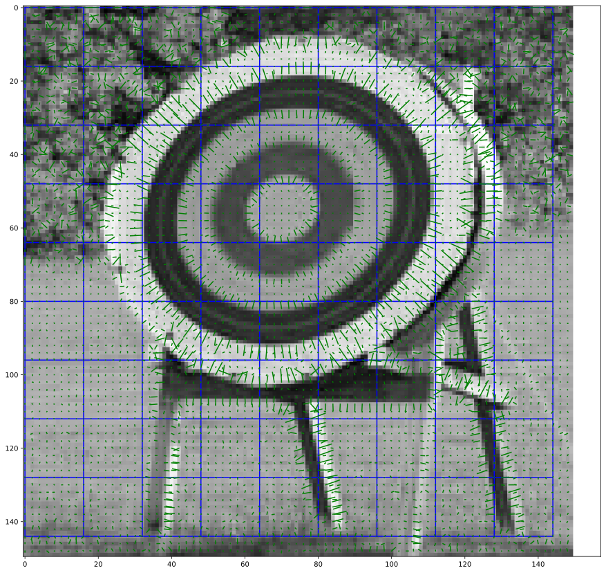
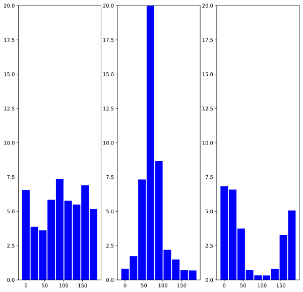
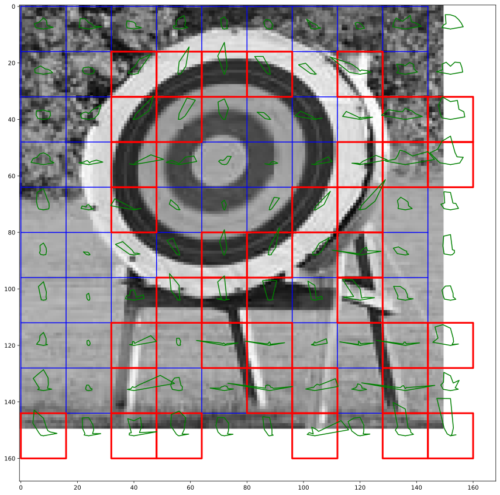
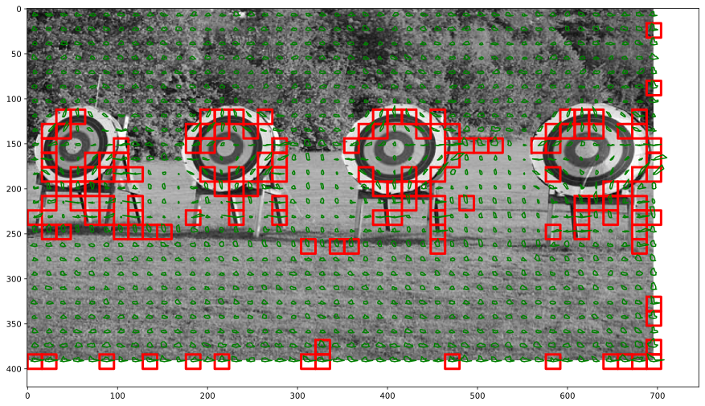
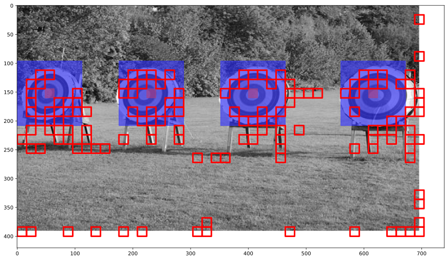
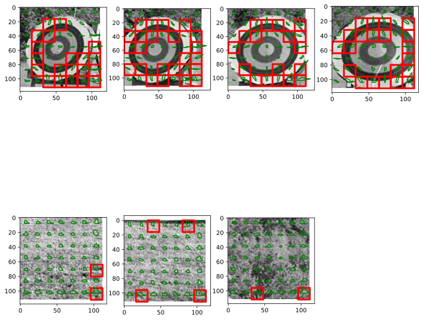

Computer Vision - HOG Feature Detector
Jacky Baltes
National Taiwan Normal University
Taipei, Taiwan
jacky.baltes@ntnu.edu.tw

Target Detection
One of the research projects in the Educational Robotics Lab (ERC) at the National Taiwan Normal University (NTNU) is the development of Olympic caliber robot athletes
We are investigating archery robots as a benchmark problem for AI
Target detection is an important aspect of this research
def checkThresholds( img, minA, maxA ):
t1 = img >= minA
#print('t1', t1)
t2 = img <= maxA
#print('t2', t2)
t3 = np.logical_and( t1, t2 )
#print('t3', t3)
t4 = np.all( t3, axis=2 )
#print('t4', t4 )
img2 = img.copy()
img2[ t4 == True ] = [255,0,0]
#print(img2)
return img2
#print( np.all( np.array( [ 190, 190, 120 ] ) > iMin ) )
# [ 217, 225], [ 149, 157 ]
img = np.array( t1Img )
roi = img[ 149:157, 217:225 ]
iMin = np.min( roi, axis=(0,1) )
iMax = np.max( roi, axis=(0,1) )
test = np.array( [ [ [1, 1, 1], [200, 200, 0 ] ], [ [200, 200, 90 ], [ 215, 212, 100 ] ] ] )
img2 = checkThresholds( img, iMin, iMax )
fig = plt.figure( figsize=(15, 15 ) )
ax = fig.add_subplot( 1, 1, 1)
ax.imshow( img2 )
s1 = addJBFigure("s1", 0, 0, fig)
plt.close()
Histogram of Oriented Gradients
As can be seen, detecting the targets using a color predicate is error prone.
In the image only some yellow pixels are identified, but we already have a lot of false positives
Image Gradients
Shape detection is commonly based on edge detection. See Hough transform to detect circles
The gradient provides important information about the shapes in the image
import math
def showGradient( img, step = 10, scale = 1.0, ax = None ):
# print(img.shape)
gradX = cv2.Sobel( img, cv2. CV_32F, 1, 0, ksize=1)
gradY = cv2.Sobel( img, cv2. CV_32F, 0, 1, ksize=1)
mag, angle = cv2.cartToPolar( gradX, gradY )
height, width = img.shape
for y in range(0, height, step ):
for x in range( 0, width, step ):
t = angle[y,x]
m = mag[y,x]
if ( ax ):
eX = x + math.cos( t ) * m * scale
eY = y + math.sin( t ) * m * scale
ax.plot( [x, eX ], [ y, eY ], 'g-' )
return mag, angle
Histogram of Oriented Gradients
Accumulate nearby gradient information into a descriptor
Dalal and Triggs proposed HOG features for detection of complex shapes (pedestrian detection)
import cv2
from skimage import io
img = io.imread( target1.getLocalName() )
gImg = cv2.cvtColor( img, cv2.COLOR_BGR2GRAY)
grayImg = np.float32( gImg ) / 255.0
#print(grayImg[0:3,0:5] )
fig = plt.figure( figsize=(15, 15) )
ax = fig.add_subplot(1,1,1)
ax.imshow( grayImg, cmap='gray' )
mag, angle = showGradient( grayImg, 5, 10, ax )
m1 = addJBFigure("m1", 0, 0, fig )
plt.close()
Gradient Information

target2 = grayImg[ 100:250, 150:300 ]
fig = plt.figure( figsize=(15, 15) )
ax = fig.add_subplot(1,1,1)
height, width = target2.shape
step = 16
x = [ i for i in range(0, width, step ) ]
y = [ i for i in range(0, height, step ) ]
x,y = np.meshgrid( x, y )
ax.imshow( target2, cmap='gray' )
ax.plot( x, y, 'b-' )
ax.plot( y, x, 'b-' )
mag, angle = showGradient( target2, 2, 5, ax )
m2 = addJBFigure("m2", 0, 0, fig )
plt.close()
Gradient Information

def normalizeAngleUnsigned( ang ):
while ( ang >= 180.0/180.0 * math.pi ):
ang = ang - 180.0/180.0 * math.pi
while ( ang < 0.0/180.0 * math.pi ):
ang = ang + 180.0/180.0 * math.pi
return ang
Histogram of Oriented Gradients
Calculate a histogram of the gradients (group into buckets based on orientation)
In this case, each bucket is 20 deg. wide, 9 buckets in total.
Sharp change in the edges of a bucket
Add a gradient to previous and next bucket center weighted by the distance to the center
def calcHOG( angle, mag, step, da = 20.0/180.0 * math.pi ):
nBuckets = int( math.pi / da )
height, width = angle.shape
hOGradients = np.zeros( ( int( math.ceil( height / step ) ), int( math.ceil( width / step ) ), 9 ) )
cnt = 0
for yb in range(0, height, step ):
for xb in range( 0, width, step ):
hog = np.zeros( nBuckets )
#print('Number of buckets', hog.shape )
for y in range( yb, min( yb + step, height ) ):
for x in range( xb, min( xb + step, width ) ):
aa = angle[ y, x ]
m = mag[y, x]
a = normalizeAngleUnsigned( aa )
ba, br = divmod( a, da )
ba = int( ba )
brp = 1.0 - br / da
# if ( xb == 3 * step ) and ( yb == 2 * step ):
# print('angle {3:5.2f}->{0:5.2f} mag={4:5.2f} added to left bucket {1} rem {2:5.2f}/percentage {5:5.2f}'.format( a / math.pi * 180.0, ba, br, aa / math.pi * 180.0, m, brp ) )
# cnt = cnt + 1
minInd = ba
maxInd = ( ba + 1 ) % nBuckets
hog[minInd] = hog[ minInd ] + brp * m
hog[maxInd] = hog[ maxInd ] + (1.0 - brp ) * m
hOGradients[ yb // step, xb // step, : ] = hog
return hOGradients
hog = calcHOG( angle, mag, step, 20.0/180.0 * math.pi )
#print( hog[1,3] )
#print( hog[3,3] )
#print( hog[0,0] )
def plotHOG( ax, hog ):
x = np.linspace( 0.0, 179.0, len(hog) )
#norm = np.linalg.norm( hog, ord=2 )
norm = 1.0
ax.bar( x, hog / norm, color='blue', width=180.0 // len(hog) )
fig = plt.figure( figsize=(10,10) )
FRows = 1
FCols = 3
axs = []
for i in range( FRows * FCols ):
ax = fig.add_subplot( FRows, FCols, i+1 )
ax.set_ylim( (0,20.0) )
axs.append(ax)
for i,b in enumerate( [ [0, 0], [1,3], [3,3] ] ):
by, bx = b
plotHOG( axs[i], hog[ by, bx ] )
ph = addJBFigure("ph", 0, 0, fig )
plt.close()
Sample HOG for three areas of the image

def normalizeHOG( hog, xStep, yStep ):
height, width, nFeatures = hog.shape
hog2 = np.zeros( (height, width, nFeatures ) )
for y in range( height ):
for x in range( width ):
hogVector = np.zeros( ( xStep * yStep * nFeatures ) )
for yi in range(y, min( y + yStep, height ) ):
for xi in range( x, min( x + xStep, width ) ):
hi = ( ( yi - y ) * xStep + xi - x ) * nFeatures
#print(xi, yi, hi)
hogVector[ hi: hi + nFeatures ] = hog[yi, xi]
#print('hogVector', hogVector )
norm = np.linalg.norm( hogVector, ord=2 )
hog2[y,x,:] = hogVector[0:nFeatures] / norm
return hog2
hog2 = normalizeHOG( hog, 2, 2 )
fig = plt.figure( figsize=(12,12) )
FRows = 1
FCols = 3
axs = []
for i in range( FRows * FCols ):
ax = fig.add_subplot( FRows, FCols, i+1 )
ax.set_ylim( (0,1.0) )
axs.append(ax)
for i,b in enumerate( [ [0, 0], [1,3], [3,3] ] ):
by, bx = b
#print('hog', by, bx, hog2[by,bx] )
plotHOG( axs[i], hog2[ by, bx ] )
ph2 = addJBFigure("ph2", 0, 0, fig )
plt.close()
def createHOGRay( hog, scale ):
nHog = len(hog)
pts = np.zeros( ( 2, nHog + 2 ) )
da = math.pi / nHog
pts[:,0] = [0,0]
for i in range(nHog):
angle = ( i + 0.5 ) * da
xpos = math.cos( angle ) * scale * hog[i]
ypos = - math.sin( angle ) * scale * hog[i]
pts[:,i+1] = [ xpos, ypos ]
pts[:,-1] = [0,0]
return pts
def showHOGVisual( ax, hog, step ):
height, width, _ = hog.shape
for y in range( height ):
for x in range( width ):
pts = createHOGRay( hog[y,x], 20.0 )
p2 = np.vstack( ( pts[0,:] + ( x + 0.5 ) * step, pts[1,:] + (y + 0.5) * step ) )
ax.plot( p2[0,:], p2[1,:], 'g-' )
def showHOG( ax, hog, thres, step ):
height, width, _ = hog.shape
for y in range( height ):
for x in range( width ):
if ( max( hog[y,x] ) > thres ):
rect = np.zeros( (2,5) )
rect[:,0] = [x*step, y*step]
rect[:,1] = [x*step + step, y*step]
rect[:,2] = [x*step + step, y*step +step]
rect[:,3] = [x*step, y*step + step ]
rect[:,4] = [x*step, y*step]
ax.plot( rect[0,:], rect[1,:], 'r-', linewidth=3.0 )
target2 = grayImg[ 100:250, 150:300 ]
ax.imshow( grayImg, cmap='gray' )
mag, angle = showGradient( target2, 10, 20, ax )
hog = calcHOG( angle, mag, step, 20.0/180.0 * math.pi )
hog2 = normalizeHOG( hog, 2, 2 )
fig = plt.figure( figsize=(15, 15) )
ax = fig.add_subplot(1,1,1)
height, width = target2.shape
step = 16
x = [ i for i in range(0, width, step ) ]
y = [ i for i in range(0, height, step ) ]
x,y = np.meshgrid( x, y )
ax.imshow( target2, cmap='gray' )
ax.plot( x, y, 'b-' )
ax.plot( y, x, 'b-' )
showHOG( ax, hog2, 0.4, step )
showHOGVisual( ax, hog2, step )
visHOG2 = addJBFigure("visHOG2", 0, 0, fig )
plt.close()
Output of HOG

target2 = grayImg[ 100:250, 150:300 ]
ax.imshow( grayImg, cmap='gray' )
mag, angle = showGradient( grayImg, 10, 20, ax )
hog = calcHOG( angle, mag, step, 20.0/180.0 * math.pi )
hog2 = normalizeHOG( hog, 2, 2 )
fig = plt.figure( figsize=(15, 15) )
ax = fig.add_subplot(1,1,1)
height, width = grayImg.shape
step = 16
x = [ i for i in range(0, width, step ) ]
y = [ i for i in range(0, height, step ) ]
#x,y = np.meshgrid( x, y )
ax.imshow( grayImg, cmap='gray' )
#ax.plot( x, y, 'b-' )
#ax.plot( y, x, 'b-' )
showHOG( ax, hog2, 0.4, step )
showHOGVisual( ax, hog2, step )
visHOG3 = addJBFigure("visHOG3", 0, 0, fig )
plt.close()
Output of HOG

Classification
Hard to use the output of normalized gradients to build higher level features
Modern approach uses machine learning (ML) to use lower level features as features for a ML algorithm to detect objects
In this example, we group 7 by 7 blocks.
Each block is represented by an array with 9 entries
def groupToCoordinates( bx, by, step ):
return [ bx * step, by * step ]
import matplotlib.pyplot as plt
import matplotlib.patches as mpatches
import numpy as np
import math
import random
GroupSize = (7, 7)
fig = plt.figure( figsize=(15, 15) )
ax = fig.add_subplot(1,1,1)
height, width = grayImg.shape
step = 16
x = [ i for i in range(0, width, step ) ]
y = [ i for i in range(0, height, step ) ]
#x,y = np.meshgrid( x, y )
ax.imshow( grayImg, cmap='gray' )
#ax.plot( x, y, 'b-' )
#ax.plot( y, x, 'b-' )
showHOG( ax, hog2, 0.4, step )
targets = [ [3, 9], [ 14, 9], [ 25, 9], [ 38, 9 ] ]
for tx, ty in targets:
r = mpatches.Rectangle( groupToCoordinates( tx - GroupSize[0]//2, ty - GroupSize[1]//2, step ), GroupSize[0] * step, GroupSize[1] * step, color='#3232ffa0' )
ax.add_patch( r )
r = mpatches.Rectangle( groupToCoordinates( tx, ty, step ) , step, step, color = '#b04080a0')
ax.add_patch( r )
figLearn = addJBFigure("figLearn", 0, 0, fig )
plt.close()
Output of HOG

fig = plt.figure( figsize=(12, 12) )
xsPos = []
ysPos = []
for i, trg in enumerate(targets):
ax = fig.add_subplot(2,4, i+1 )
tx, ty = trg
px, py = groupToCoordinates( tx - GroupSize[0]//2, ty - GroupSize[1]//2, step )
offx, offy = 0, 0
ex, ey = groupToCoordinates( tx + GroupSize[0]//2 + 1, ty + GroupSize[1]//2 + 1, step )
roi = grayImg[py+offy:ey+offy,px+offx:ex+offx]
ax.imshow( roi, cmap='gray' )
mag, angle = showGradient( roi, 10, 20 )
hog = calcHOG( angle, mag, step, 20.0/180.0 * math.pi )
hog2 = normalizeHOG( hog, 2, 2 )
showHOG( ax, hog2, 0.4, step )
showHOGVisual( ax, hog2, step )
x = hog2.flatten()
xsPos.append(x)
ysPos.append(1)
others = [ [ 10, 19 ], [ 20, 19], [ 30, 3 ] ] #, [ 30, 8 ] ]
xsNeg = []
ysNeg = []
for i, oth in enumerate( others ):
ax = fig.add_subplot(2,4, 5 + i )
tx, ty = oth
px, py = groupToCoordinates( tx - GroupSize[0]//2, ty - GroupSize[1]//2, step )
offx, offy = 0, 0
ex, ey = groupToCoordinates( tx + GroupSize[0]//2 + 1, ty + GroupSize[1]//2 + 1, step )
roi = grayImg[py+offy:ey+offy,px+offx:ex+offx]
ax.imshow( roi, cmap='gray' )
mag, angle = showGradient( roi, 10, 20 )
hog = calcHOG( angle, mag, step, 20.0/180.0 * math.pi )
hog2 = normalizeHOG( hog, 2, 2 )
showHOG( ax, hog2, 0.4, step )
showHOGVisual( ax, hog2, step )
x = hog2.flatten()
xsNeg.append(x)
ysNeg.append(-1)
c1Fig = addJBFigure("c1Fig", 0, 0, fig )
plt.close()
Traing Data

from sklearn.model_selection import train_test_split
from sklearn.svm import SVC
clf = SVC( gamma=0.1, C=1000, kernel='poly', degree = 2 )
clf.fit( xsPos + xsNeg, ysPos + ysNeg )
acc = clf.predict( xsPos + xsNeg ) - ( ysPos + ysNeg )
print(acc)
[0 0 0 0 0 0 0]
Note that these results at the moment are totally meaningless.
You should never use test data to estimate the accuracy of your machine learning algorithm.
- Split data into test and validation data
- 10-fold cross validation
Presentation of the training data is strongly correlated (positive first, then negative examples). Issues in several ML algorithms, but ok for SVMs.
from sklearn.model_selection import train_test_split
from sklearn.svm import SVC
from sklearn.neural_network import MLPClassifier
npfile = np.load( '/tmp/data1.npz')
xs = npfile['arr_0']
ys = npfile['arr_1']
xTrain, xTest, yTrain, yTest = train_test_split(xs, ys, test_size=0.2, random_state=1)
clf = SVC( gamma=0.01, C=1000, kernel='poly', degree = 2 )
#clf = MLPClassifier(solver='lbfgs', alpha=1.0e-5, hidden_layer_sizes=(4), random_state=1, learning_rate_init=0.1, verbose=True)
print('Start training')
clf.fit( xTrain, yTrain )
#print(clf.predict(xs))
print("Size of training set", len(xTrain), "Size of validation set", len(xTest) )
print('Validation Accuracy:', len(xTest) - sum( ( abs( clf.predict( xTest ) - yTest ) / 2 ) ),
'Training Accuracy:', len( xTrain) - sum( ( abs( clf.predict( xTrain ) - yTrain ) / 2 ) ) )
Start training Size of training set 146 Size of validation set 37 Validation Accuracy: 37.0 Training Accuracy: 146.0